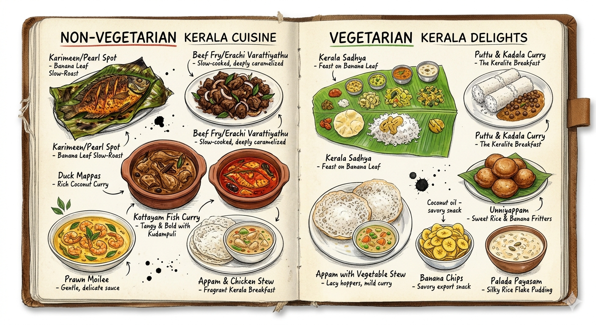

Welcome to Kerala
Travel Guide
God's Own Country

Getting There
By Air
Closest Airport: Cochin International Airport (COK)
• Kochi → Stay Samara: ~80 km / ~1.5 hrs
• Kochi → Salem Marthoma Church, Pandalam: ~144 km / ~3 hrs
Getting to the venue: Head to the prepaid taxi counter at the arrivals exit. Book your cab here before stepping out — easiest and safest for the drive down.
By Air
Closest Airport: Cochin International Airport (COK)
• Kochi → Salem Marthoma Church, Pandalam: ~144 km / ~3 hrs
Getting to the venue: Head to the prepaid taxi counter at the arrivals exit. Book your cab here before stepping out — easiest and safest for the drive down.
By Rail
Nearest Station: Chengannur Railway Station (CNGR)
Well connected from Thiruvananthapuram, Ernakulam, Kottayam, Kollam, and major cities across Kerala.
Getting to the venue: Taxis and autos are available right outside the station exit. About 20 mins by road.
Accommodation
Pandalam and nearby Kottayam offer excellent accommodation options for all budgets.
Premium
- Kumarakom Lake Resort - Luxury backwater resort (20 km away)
- The Backwater Ripples - Boutique houseboat experience
- Kottayam Hotels - Various luxury chains in Kottayam
Mid-Range
- Sreevalsam Residency — M C Road, Kulanada, Pandalam. Clean, comfortable rooms, ~3 km from venue. Get Directions
- Pandalam Town Hotels — Close to the venue, comfortable stays
- Kottayam Budget Hotels — Good value, 20–30 min from venue
- Homestays — Authentic Kerala experience
Budget-Friendly
- Guest Houses - Throughout Pandalam area
- Backpackers Hostels - In Kottayam and surrounding areas
- Family Stays - Local family homes open to guests
Pro Tip: Book accommodation 2-3 months in advance. August is peak monsoon season in Kerala, but it's also stunning!
What to Pack
Clothing
- Light, breathable fabrics (cotton, linen, silk)
- A light rain jacket or umbrella (monsoon season)
- Comfortable walking shoes
- Formal/smart casual for events
Essentials
- High SPF sunscreen
- Mosquito repellent
- Travel adaptor (India uses Type A, B, C, D, M plugs)
- Medications (antimalarial if needed)
Documents
- Passport & visa (if required)
- Travel insurance
- Flight/train tickets
- Vaccination certificates
Local Information
Best Time to Visit
August: Monsoon season — lush, green, and cooler. Perfect for experiencing Kerala's natural beauty.
Temperature: 25-32°C (77-90°F)
Tip: Carrying an umbrella is advisable, especially during the monsoon season. A compact folding one fits easily in any bag.
Currency & Money
AED: Many of our guests travelling from Dubai — 1 AED ≈ ₹23. ATMs widely available in Kochi and Thiruvanthapuram.
INR: Indian Rupee (INR)
ATMs are widely available in Pandalam and Kottayam. Credit cards accepted at most establishments.
1 USD ≈ 83 INR (rates vary)
Language & Communication
Local Language: Malayalam
Also Spoken: English, Tamil, Hindi
Download Google Translate offline for convenience. Most hotel staff speak English.
Getting Around
Taxi/Uber: Readily available and affordable
Auto-rickshaws: Cheap, fun, local experience
Car Rental: 24-hour driver services available
Emergency Contacts
Police: 100
Ambulance: 102
Hospital: Pandalam has medical facilities nearby
Food & Dining
A Taste of Kerala
Kerala's food is built on coconut, spice, and centuries of tradition. Here is what to order, and what not to miss.
Non-Vegetarian
- Karimeen (Pearl Spot) — Kerala's prized freshwater fish, pan-fried or wrapped and slow-roasted in banana leaf. Find it near the backwaters. Nothing else tastes quite like it.
- Beef Fry (Erachi Varattiyathu) — Slow-cooked, spiced, deeply caramelised beef. A Sunday staple in Kerala Christian homes, and absolutely unmissable. Served with appam or parotta.
- Duck Mappas — Braised duck in a rich coconut milk curry with whole spices. A signature of the Syrian Christian kitchen — you will not find it done better anywhere.
- Kottayam-style Fish Curry — Made with kudampuli (Malabar tamarind), producing a bold, tangy, deep-red curry entirely unique to this region.
- Prawn Moilee — Prawns in a gentle coconut milk sauce, golden with turmeric. Delicate, coastal, and best eaten with appam.
- Appam with Chicken Stew — Lacy rice hoppers soaking up a fragrant, mild coconut stew. The definitive Kerala breakfast.
Vegetarian
- Kerala Sadhya — A full vegetarian feast on a fresh banana leaf: rice, avial, olan, thoran, sambar, rasam, pickles, papadum, and payasam. Eaten with your right hand, as tradition calls for. The gold standard of Kerala cooking.
- Puttu & Kadala Curry — Steamed cylinders of rice flour and coconut, served with a boldly spiced black chickpea curry. The Keralite breakfast, done right.
- Appam with Vegetable Stew — The same lacy hoppers, now paired with a mild coconut-based vegetable curry. Simple and perfect.
- Unniyappam — Small, round, sweet rice fritters made with jaggery and banana. A temple snack found at every bakery. Once you start, you will not stop.
- Kerala Banana Chips — Thinly sliced raw banana fried in coconut oil with a touch of salt. Kerala's great export and proudest snack.
- Palada Payasam — A silky, cardamom-scented milk pudding with rice flakes. Rich, slow-cooked, and the fitting end to any meal here.
Where to eat: For the most authentic experience, ask any local for the nearest "meals hotel". Hotel Sagar in Pandalam and any small bakery (kadas) near Kulanada are excellent starting points for Kerala meals and snacks.
